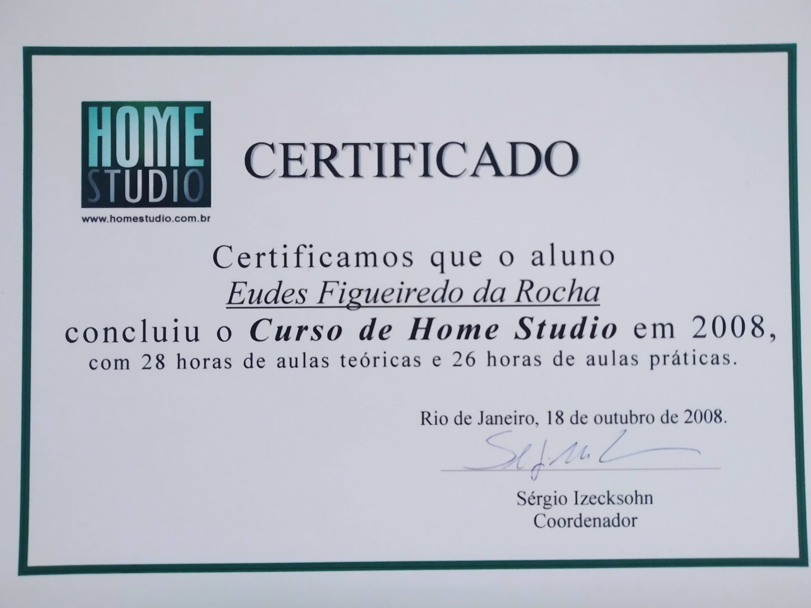
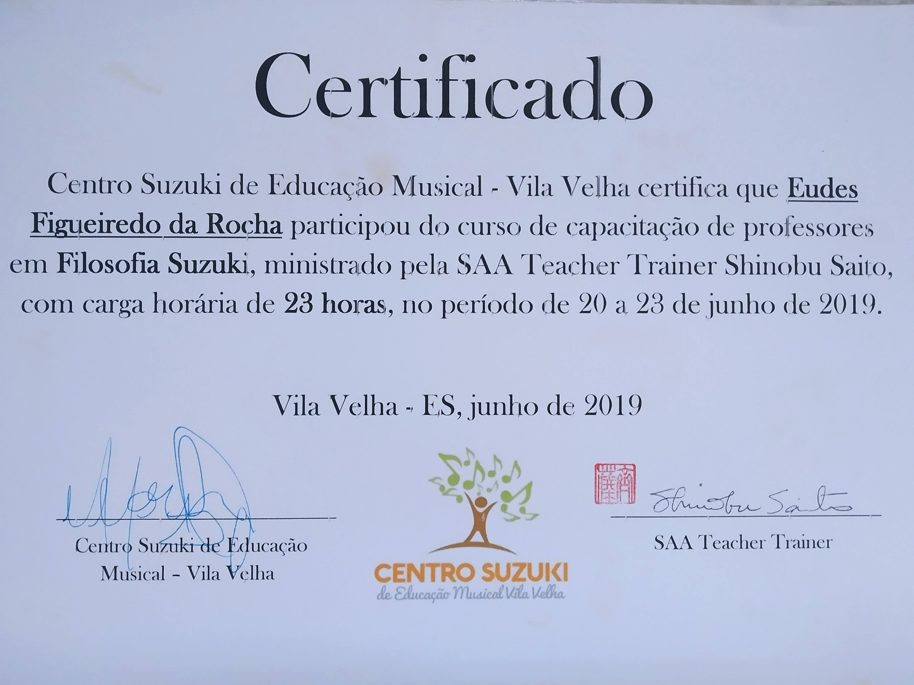
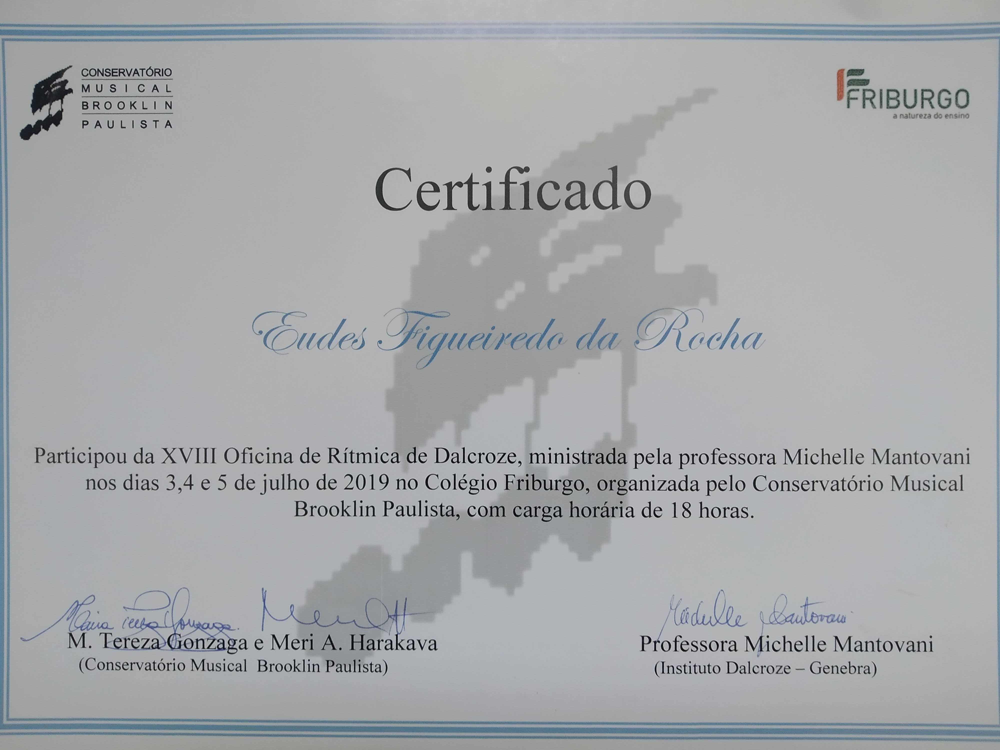
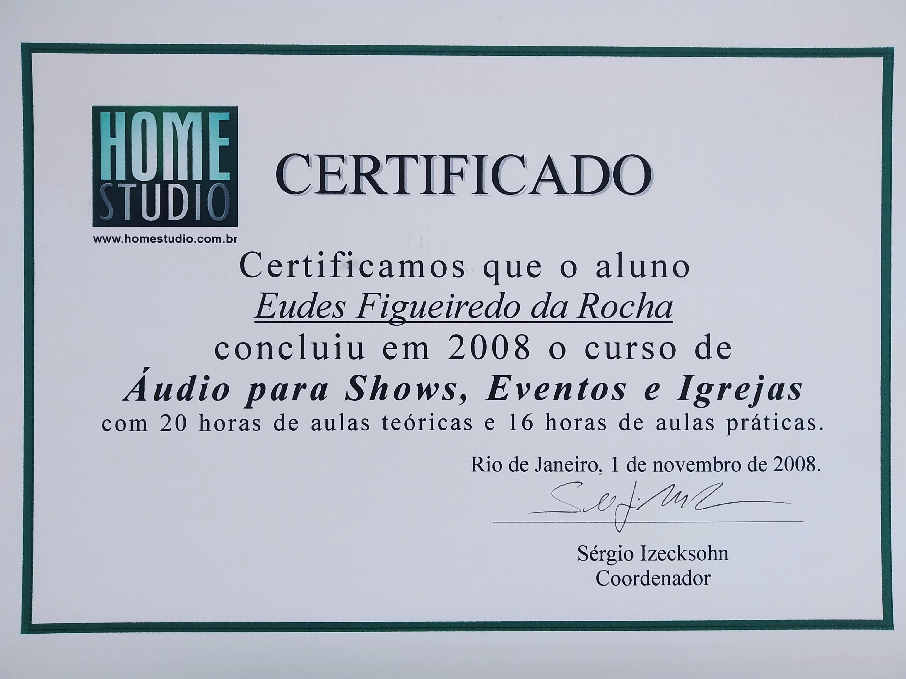
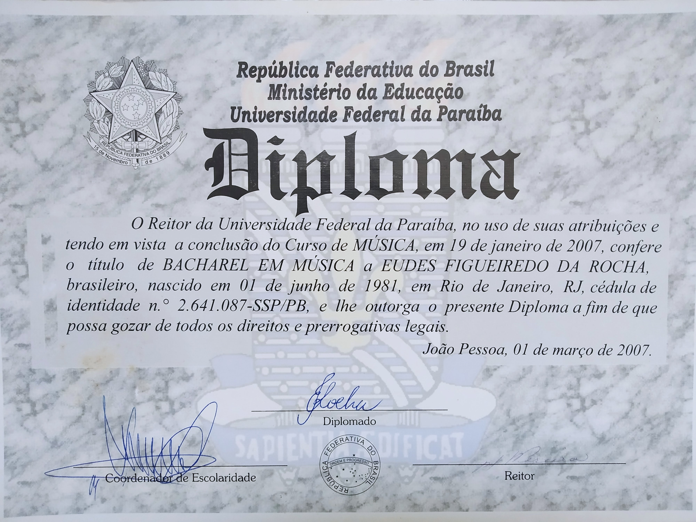
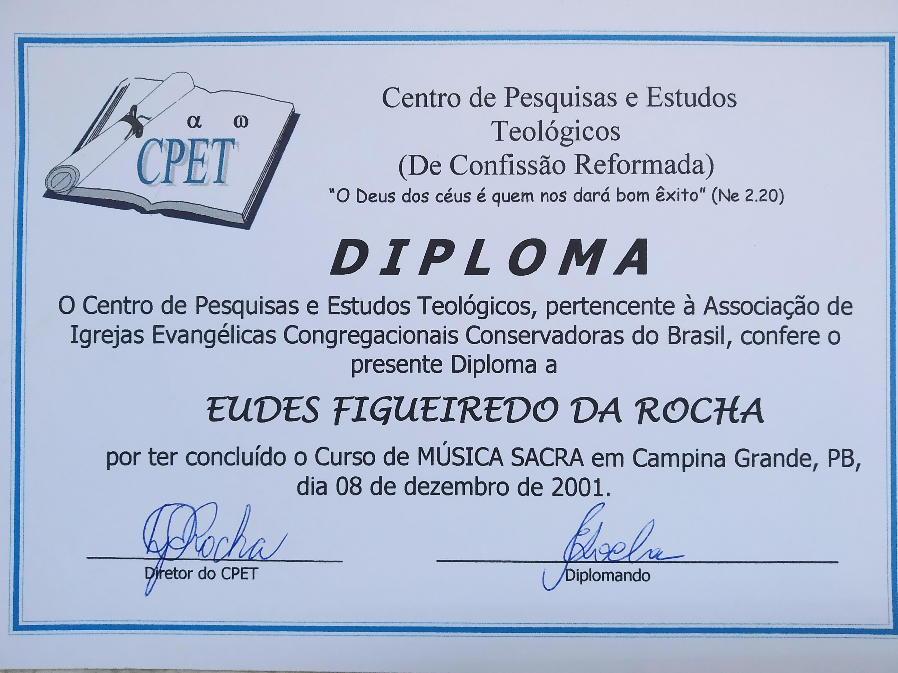

voltar
Currículo
| Ano | Função | Cidade |
|---|---|---|
| 2022 | Regente e criador do Coral da Igreja Nossa Senhora das Graças | Campina Grande - PB |
| 2019-2020 | Diretor da Escola Municipal de Música | Barreiras - BA |
| 2018-2019 | Regente Coral da 1a Igreja Presbiteriana | Barreiras - BA |
| 2018-2019 | Professor do Curso de Licenciatura EAD da Claretiano | Barreiras - BA |
| 2017-2020 | Professor de música da Escola Municipal de Música | Barreiras - BA |
| 2016 | Instrutor de técnica vocal da Igreja Metodista | Manhuaçu - MG |
| 2015 | Diretor de Música da 3a Igreja Presbiteriana | Alto Caparaó - MG |
| 2013-2015 | Diretor de Música da 1a Igreja Presbiteriana | Alto Jequitibá - MG |
| 2010-2012 | Técnico de som e pianista da 1a Igreja Batista | Campina Grande - PB |
| 2009-2012 | Pianista e professor auxiliar do Dept. de Música da UFCG | Campina Grande - PB |
| 2006-2007 | Diretor de Música Igreja Evangélica Congregaciona Conservadora | Campina Grande - MG |
voltar
Cursos
| Ano | Curso | Instituição |
|---|---|---|
| 2020 | Pós Graduação em Música Brasileira (interrompido) | Centro Universitário Faveni, EAD |
| 2019 | Método para Professores | Conservatório Brooklin Paulista, São Paulo - SP |
| 2019 | Treinamento Método Suzuki para Professor | Centro Suzuki de Esucação Musical, Vila Velha - ES |
| 2008 | Técnido de Estúdio | Home Studio, Rio de Janeiro - RJ |
| 2008 | Técnico de Sonoplastia | Home Studio, Rio de Janeiro - RJ |
| 2006 | Graduação em Música | UFPB, João Pessoa - PB |
| 2001 | Curso de Música Sacra | CPET, Campina Grande - PB |






voltar
Agenda
Aqui você poderá conferir os dias e horários vagos para marcar sua aula particular,
em grupo ou para a criação do grupo instrumental ou coral de sua igreja ou instituição.
voltar
Sobre
Natural do Rio de Janeiro iniciou seus estudos de música, ao piano, com sua irmã, Euliene Figueiredo da Rocha aos 8 anos.
Aos 16 anos retomou os estudos do instrumento e motivado pelo período de ingresso ao curso superior,
se preparou com, professor Robson Rodrigues Ribeiro, o então diretor de música de sua igreja.
No ano de 2002 foi aprovado no Curso de Graduação em Música no Departamento de Música da UFPB.
Estudou 4 anos sob a tutela da professora Marília Cahino que tinha a área de piano sob a direção do professor José Henrique Martins.